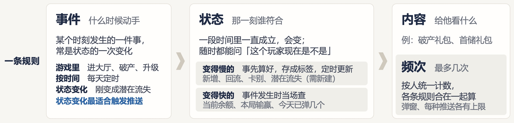
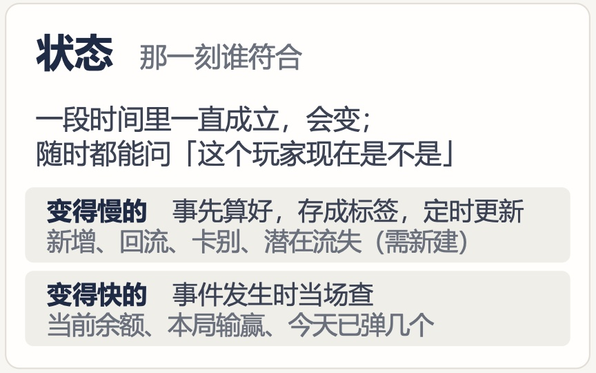
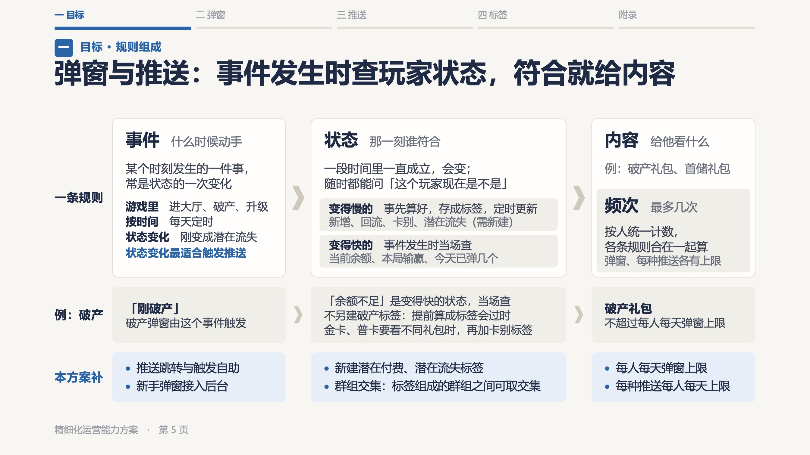
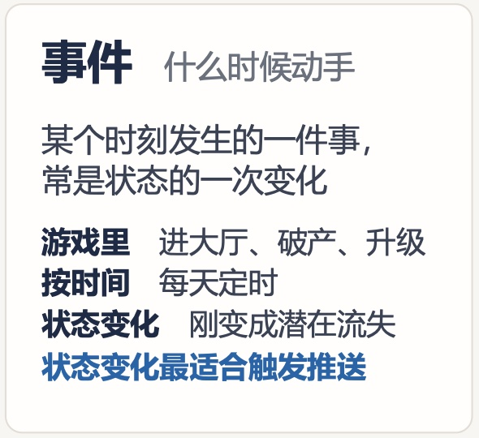
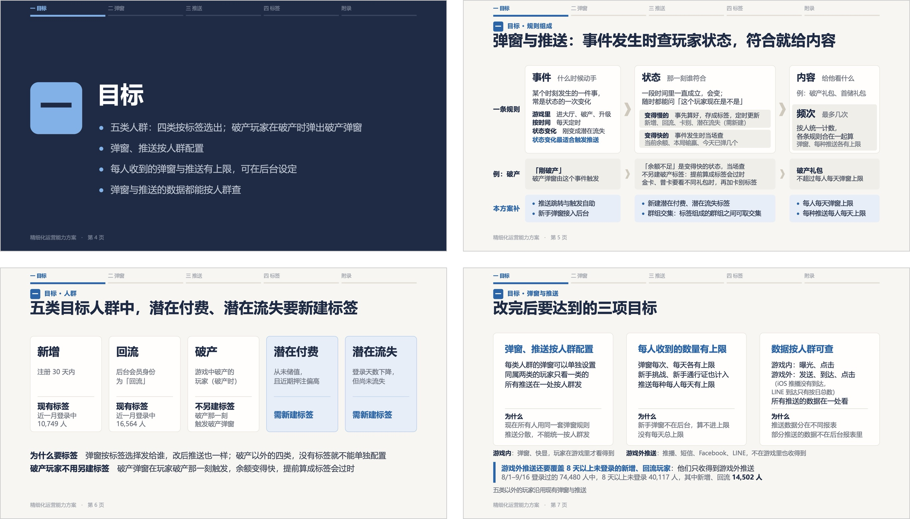
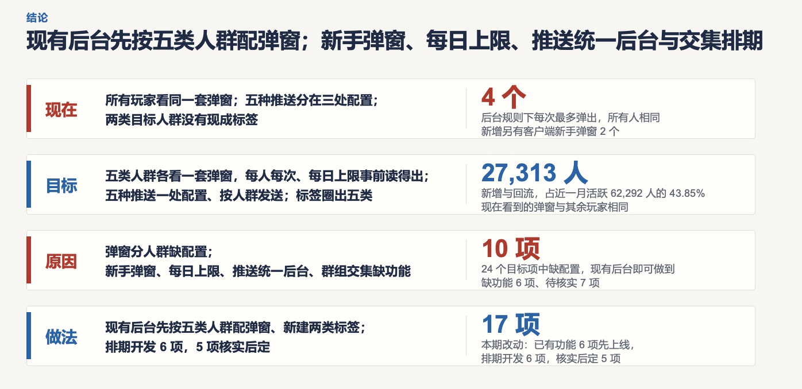
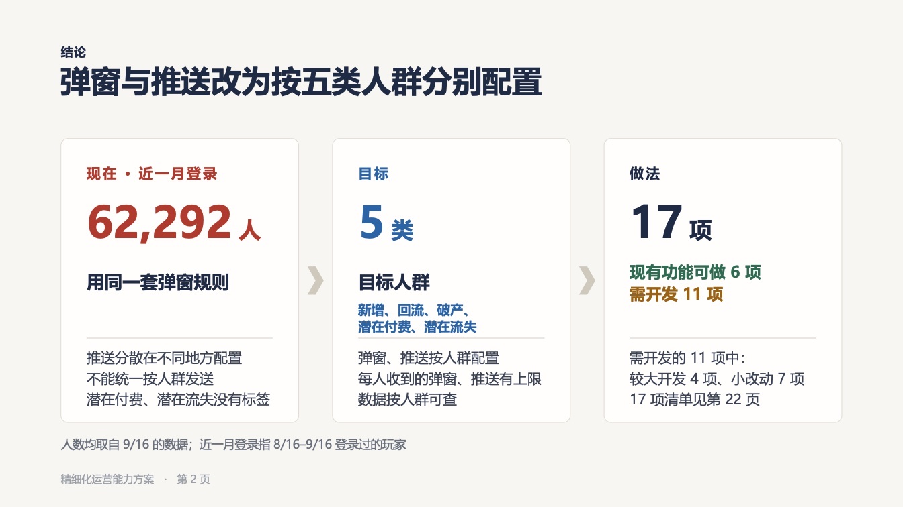

已判 0 / 11 条 · 判完了
弹窗标签推送系统 · 2026-10-16 · 第 7 份产出
第 7 份｜主管读弹窗方案演示稿第 5 页，能不能看懂弹窗与推送的一条规则由哪几部分组成？
按下面 11 条标准逐条看 AI 评审的结论（每条只答「符合」或「不符合」），你只判同意或不同意；也可补标准里缺的条目。
这页 10/15 新增，放在人群页之前；读者是主管，全稿用途是汇报工作进度，让主管看出与他的期望有无出入。「框架」＝你认可的一条规则的组成「事件＋状态＋内容＋频次」，原称「触达规则」，写作标准不用「触达」，页上写「弹窗与推送」「一条规则」。
01判断标准：6 条，按主管读这一页的顺序排
一页一断言只读标题就知道规则怎么运作
1只读标题，能说出一条规则怎么运作：几部分按什么先后、在什么条件下起作用
看哪里 页眉与标题|出处 写作标准「标题是结论，不是元描述」「大标题写小标题之外的信息（彼此什么关系）」；业内做法：金字塔原理、断言＋证据式幻灯片
我们这页对应的部分
第 5 页 · 页眉与标题
标题写出事件、状态、内容三部分及其先后：事件发生 → 查玩家状态 → 符合就给内容。「频次」不在标题里。
AI 评审：否 标题只含事件→状态→内容三部分，缺频次及「不超上限」条件
你判：
分组与版面关系几部分一眼数得出
2版面上一眼数得出一条规则共几部分、各叫什么、按什么先后
看哪里 「一条规则」一行|出处 你认可的框架「事件＋状态＋内容＋频次」；写作标准「先交代边界再讲内容」「版面的排法要和内容之间的关系一致」；业内做法：Microsoft 图示分类、Duarte 一瞥测试
业内公认的汇报做法
- Microsoft PowerPoint 图示（SmartArt）：按信息关系选图——有先后的步骤用「流程」，没有先后的并列用「列表」，部分与整体的关系用「矩阵」 Microsoft 文档
- Duarte 一瞥测试：观众 3 秒内看得出一页的意思 Duarte 官网
我们这页对应的部分
三张卡由箭头连接，依次为「事件 什么时候动手」›「状态 那一刻谁符合」›「内容 给他看什么」；「频次 最多几次」是内容卡里的灰底块。四个部分名称都是加粗大字（下图）。

第 5 页 ·「一条规则」一行
AI 评审：否 频次是内容卡里的灰底块，与状态分类块同样式，一眼数成三部分
你判：
措辞与指代名词当场说清是什么
3四个部分各有一句说明它是什么；页上其余名词（标签、卡别、群组、推送）在本页或之前的页交代过是什么
看哪里 四张卡的副标；状态卡、例行、「本方案补」行|出处 写作标准「概念第一次出现就交代它是什么」「后台功能名第一次出现说明它是什么」；你定的：新出现的名称当场写清它做什么（10/9），写「推送」时说清是游戏内还是游戏外（10/13）；业内做法：美国政府平实语言指南
业内公认的汇报做法
- 美国政府平实语言指南（digital.gov）：不得不用专业词时要给出定义；不要把定义集中放在文档开头或结尾 digital.gov
我们这页对应的部分

第 5 页 · 状态卡
- 四部分：副标依次为什么时候动手、那一刻谁符合、给他看什么、最多几次
- 标签：第 2、4 页已出现，没有解释；本页写「事先算好，存成标签，定时更新」；第 6 页底写「弹窗按标签选择发给谁」
- 卡别：本页第一次出现；例行写「金卡、普卡要看不同礼包时，再加卡别标签」
- 群组：「本方案补」行写「标签组成的群组之间可取交集」
- 推送：前 5 页没有列出包括哪几种，也没写是游戏内还是游戏外
AI 评审：否 四部分副标齐；但第1–5页未写推送有哪几种、游戏内还是游戏外
你判：
证据支撑一个例子走完四部分
4有完整例子把四部分串起来，每部分填实际的值；标题说的弹窗与推送各有一例
看哪里 「例：破产」一行|出处 写作标准「正文每句带数字、机制或因果之一，不写空概念」；业内做法：具体例子
我们这页对应的部分
- 弹窗：四格齐全——事件「刚破产」› 状态「余额不足」，变得快、当场查 › 内容「破产礼包」› 频次「不超过每人每天弹窗上限」（下图）
- 推送：我们这里没有完整例子；事件卡里有一句「状态变化最适合触发推送」，例为「刚变成潜在流失」
第 5 页 ·「例：破产」一行
AI 评审：否 弹窗有「例：破产」完整四部分；推送只有一句话，无完整例
你判：
一页一断言改动行不成为第二件事
5这一页只讲「一条规则由哪几部分组成」；「本方案补」一行读得出是各部分对应的改动，不让人以为这页还在讲第二件事
看哪里 整页三行；「本方案补」一行|出处 写作标准「一页只讲一个结论」；你定的：全稿用途是让主管看出与他的期望有无出入（10/12）；业内做法：Duarte 一瞥测试、断言＋证据式幻灯片
我们这页对应的部分

第 5 页 · 整页
整页三行：「一条规则」写四部分各是什么；「例：破产」写一条弹窗规则怎么填；「本方案补」列 6 项改动，与上面三栏对齐（下图）。
第 5 页 ·「本方案补」一行
AI 评审：是 「本方案补」三栏与事件/状态/内容·频次对齐，读作各部分改动
你判：
措辞与指代不了解项目的人复述不走样
6标题和卡片短句单独拿给不了解项目的人读，复述出的意思与本意一致：不缺主语和对象，不用内部简称和「触达」，没有工作过程的话
看哪里 标题、卡片短句、行名|出处 写作标准「措辞须经得起无上下文读者复述」「全文统一用词，不用触达」；你定的：呈交版只写方案本身，不出现工作过程用语（10/10）；业内做法：平实语言复述测试
业内公认的汇报做法
- 复述测试（digital.gov 平实语言指南）：请读者用自己的话说出一段的意思，记下原话不纠正；读错的地方就是要改的地方 digital.gov
我们这页对应的部分

第 5 页 · 事件卡
页上的短句：状态变化最适合触发推送
变得慢的 事先算好，存成标签，定时更新
变得快的 事件发生时当场查
按人统一计数，各条规则合在一起算
弹窗、每种推送各有上限
；行名一条规则
本方案补
；改动推送跳转与触发自助
。页上没有「触达」，也没有待核实、阶段这类工作过程用语。
AI 评审：否 「推送跳转与触发自助」压缩成简称，缺主语对象，难以复述
你判：
业内做法都已打开原始页面核对。
02按评审维度补齐的标准：5 条，补上全稿位置、观感、方向、现状依据与多余内容
按评审维度表补齐，每条小标写所属维度。
全稿位置与密度在本章里的位置与内容量
7第 5 页的页眉标出所在章，内容量与它在该章中的位置相称（章首页只放结论和少量支撑块，细节留给后页）
看哪里 第 5 页页眉与整页；第 4、6 页|出处 演示稿观感标准「密度递增」（你 10/12：「要有个递增的感觉，让读者适应适应」）
依据的标准怎么写
- 章内逐步加密：每章大致「分隔页 → 第一页 → 中间页 → 最后的细节页」；重页尽量放在每章后半和附录
- 密度分级：轻＝结论页、每章第一页，结论加少量支撑块；中＝章内主体，一个主视觉配少量辅助块；重＝章内最后的细节页、附录
- 你 10/12：「要有个递增的感觉，让读者适应适应，不然一下密度太大直接就失去阅读欲望了」
我们这页对应的部分
- 页眉：顶部章导航五项，「一 目标」下为蓝色粗线；章名行「一 目标 · 规则组成」
- 「一 目标」一章共 4 页（下图）：第 4 页章分隔页，深色底，章名加四条目标；第 5 页即本页，分隔页后的第一页，三行：「一条规则」三张卡、「例：破产」、「本方案补」；第 6 页五类人群五张卡加两行说明；第 7 页三项目标三张卡加三行补充

「一 目标」一章：第 4 页（左上）、第 5 页（右上）、第 6 页（左下）、第 7 页（右下）
AI 评审：否 页眉标了所属章，但作为章内第一页放了三行九块，比后两页还密
你判：
视觉完成度对齐、间距、符号、字号、留白
8第 5 页的卡片等宽对齐、间距一致，并列的行有符号，标题字号明显大于正文，留白充足不挤
看哪里 第 5 页整页|出处 演示稿观感标准「留白与网格」「基础排版」（你 10/12：「这也太粗糙了吧」）；业内做法：NN/g 视觉设计原则、Ant Design 设计原则
业内公认的版面做法
- NN/g 视觉设计原则：比例，用相对大小表示重要程度；视觉层级，用大小、颜色、间距引导先看什么；对比，不同的元素差别要明显 NN/g 文章
- Ant Design·对齐：文案左对齐，形成一个视觉起点 Ant Design
- Ant Design·亲密性：关联越高距离越近；纵向间距按 8／16／24 三档或 8 的倍数 Ant Design
- 演示稿观感标准：边距 0.5–0.6 英寸以上（36–43 磅），块间距 0.3–0.5 英寸（22–36 磅）；并列的几行单独成行时，行前加项目符号，行间距明显大于行内
我们这页对应的部分
检查点与实测（取自演示稿文件，单位：磅；页面 960 × 540）：
- 卡片等宽对齐 「一条规则」三张卡宽 205／302／194，顶边同在 140、高同为 189；下面两行各三格与三张卡同列同宽
- 间距 三张卡之间 31、30（中间放箭头）；三行之间 12、11；末行底边到页脚 26
- 并列的行 事件卡「游戏里／按时间／状态变化」三行、「例：破产」中格三行：无项目符号；「本方案补」六项：前有蓝色小方块；状态卡两项：各占一个灰底块
- 字号 标题 32；四部分名称 20；卡内正文 12.5–14；行名 14.5；页眉章名 13
- 留白 左右边距各 65；卡内文字距卡边约 15
第 5 页 · 整页
AI 评审：否 三张卡宽度不一，事件卡并列三行无符号，三行卡片间距约 0.17 英寸偏挤
你判：
方向一致四部分与你认可的框架一致
9第 5 页的规则组成就是你认可的「事件＋状态＋内容＋频次」四部分，没有增减部分或换用别的名称
看哪里 「一条规则」一行与四张卡|出处 你定的：规则框架「事件＋状态＋内容＋频次」
依据的标准怎么写
- 你认可的规则框架：一条规则＝事件＋状态＋内容＋频次；本页按这个框架于 10/15 新增
- 用词：框架原称「触达规则」；写作标准不用「触达」，页上写「弹窗与推送」「一条规则」
我们这页对应的部分
行名一条规则
；三张卡依次事件 什么时候动手
状态 那一刻谁符合
内容 给他看什么
，第四部分频次 最多几次
是内容卡里的灰底块（下图）。「例：破产」一行按事件、状态、内容三格写，频次写在内容格不超过每人每天弹窗上限
。
第 5 页 ·「一条规则」一行
AI 评审：是 事件、状态、内容、频次四部分齐全且名称一致，频次放在内容卡里
你判：
事实与依据关于现有后台的说法都核对过
10第 5 页「本方案补」一行里说现有后台能做或不能做的每一处，都与现有后台截图核对过
看哪里 「本方案补」一行；现有后台截图|出处 写作标准「没查实的能力，既不写成已能做，也不写成做不到」（你：「为什么说先后不可控呢？」）
依据的标准怎么写
- 写作标准·不误导：没查实的能力，既不写成已能做，也不写成做不到；资料没写、本地数据算不出，不等于系统没有这个能力
- 你推翻过的同类说法：早先稿件写弹窗「先后不可控」，与后台实际不符，你问「为什么说先后不可控呢？」
我们这页对应的部分
现有后台截图 6 张，都是「大厅弹窗顺序设定」「玩家弹窗顺序查询」两页。「本方案补」六项与截图的对应：
- 每人每天弹窗上限 弹窗顺序设定列表有「弹出数量」栏（三条规则为 1、1、3），各活动写「弹窗次数」「冷却时间」；没有每人每天合计栏
- 新手弹窗接入后台 弹窗顺序设定列表（上架中）共 3 条：破产储值弹窗、通用弹窗、活动类弹窗
- 推送跳转与触发自助；每种推送每人每天上限 截图里没有推送页面
- 新建潜在付费、潜在流失标签；群组交集 截图里没有会员标签设定、标签群组设定页面
第 5 页 ·「本方案补」一行
AI 评审：否 后台截图只有弹窗顺序两页，推送和标签相关的说法无从核对
你判：
无多余内容没有读法、导语、标注和过程用语
11第 5 页没有读法提示、方法论导语、成本或来源标注和工作过程用语
看哪里 第 5 页整页|出处 写作标准「要删掉的内容」；你定的：呈交版只写方案本身
依据的标准怎么写
- 写作标准·要删掉的内容：过程痕迹与元信息，如评审、上级、版本沿革、文档自指、读者是谁、编排说明、方法论导语、图注里的绘制说明；不承载内容的说明性信息，如阅读时间
- 已定：呈交版只写方案本身，不出现「主管、上级、请…定」，不出现工作过程用语和内部清单页
我们这页对应的部分
第 5 页 · 整页
- 页眉与页脚 章导航；「一 目标 · 规则组成」；「精细化运营能力方案 · 第 5 页」
- 卡片里的说明句 「状态变化最适合触发推送」「不另建破产标签：提前算成标签会过时」
- 标注 「（需新建）」1 处，在状态卡「潜在流失」后；页上没有成本标签和来源标注
AI 评审：是 整页只有导航、标题、卡片内容与页脚，无读法、导语、成本或来源标注
你判：
补齐部分的业内做法均取自已核对的官方页面；第 5 页的尺寸、字号从演示稿文件读出。
03参考案例：你推翻过的两份同类稿
例 1 四个部分平铺成表格
- 你的原话
- 「四个关键结构及内容是很好的内容，但数字和结论的意义我看不到，而且这个四结构明显可以用好得多的方式展示，而不是像表格一样平铺」（10/10）
- 当时的稿
- 10/10 版第 2 页：现在、目标、原因、做法四行按表格平铺，右侧各配一个放大数字（下图上）
- 改后
- 改为「现在 › 目标 › 做法」三张卡，从左到右、箭头相连；每张一个主数字直接说明本栏：62,292 人用同一套弹窗规则、5 类目标人群、17 项改动（下图下）

10/10 版 · 第 2 页（当时）

现行 · 第 2 页（改后）
例 2 短句压成缩写，主管反复看不懂
- 你的原话
- 「这几句话分别让无上下文的agent去读，看看他们理解的意思是什么，如果理解的不准确，说明表述不清晰，这几句话被主管反复了说了好几遍看不懂」（10/12）
- 当时的稿
- 10/12 版标签章：「两类人群没有标签，群组不能取交集」「且✅、排除✅、或✅、群组交集❌」「推送、效果、对照共用同一套人群标签」。不了解项目的读者 8 人次全部读偏，例如「效果」读成转化付费，两件独立的事读成因果
- 改后
- 补全主语、对象、动作，去掉内部简称，例：「潜在付费、潜在流失两类人群在后台没有标签」；全稿措辞经四轮共 36 人次无上下文读者复述后定稿
04怎么判
直接在页面上点：每条下面点「同意」或「不同意」（不同意可写一句理由），页面最下面可补还缺的标准；点完自动保存，判完在对话里说一声「判完了」即可。
05还缺什么，判完没有
原文：弹窗标签推送方案.pptx（第 5 页） 第 5 页页面图 请你判的 10 份产出